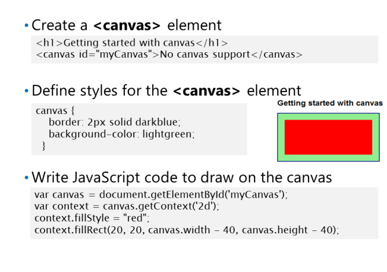
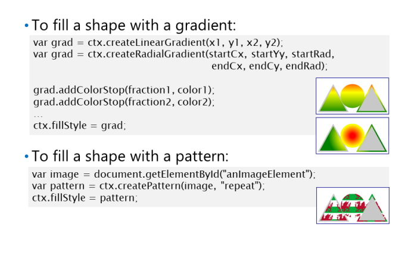
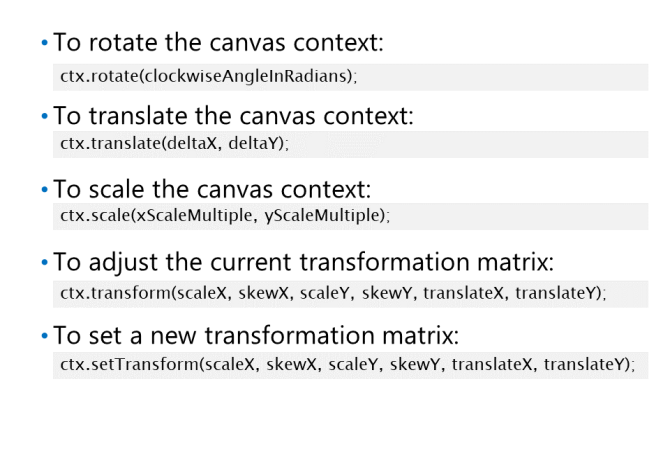

Korzystanie z Canvas API

Canvas API to alternatywa dla grafiki SVG i jest przydatna dla Ciebie
chcesz wykonać jednorazowe operacje graficzne na stronie internetowej. Jednak grafiki SVG są zdefiniowane
przy użyciu elementów HTML5 Canvas API jest programowe i wymaga rysowania grafiki przez pisanie
Kod JavaScript.
Kształty są
nie są przechowywane w drzewie DOM, więc nie ma mowy
później wchodzić w interakcje z kształtami. Dla
na przykład nie można uzyskać dostępu do kształtów za pomocą DOM, nie można zastosować stylów CSS do kształtów na płótnie, oraz
nie można obsługiwać zdarzeń na kształtach płótna.
Aby narysować grafikę na płótnie, musisz napisać kod JavaScript. Wykonaj następujące kroki:
1. Uzyskaj odwołanie do elementu canvas
, wywołując funkcję DOM, np
document.getElementById().
2. Wywołaj getContext('2d') na obiekcie canvas, aby uzyskać dwuwymiarowy kontekst rysowania dla
brezentowy.
3. Wywołaj metody w obiekcie kontekstowym, aby narysować kształty na powierzchni płótna.
Poniższy przykład pokazuje, jak utworzyć płótno i narysować na nim prostokąt. Przykład ustawia
właściwość context.fillStyle, aby ustawić kolor wypełnienia otoczenia na czerwony dla kolejnych operacji rysowania.
przykład następnie wywołuje metodę context.fillRect () w celu narysowania pełnego prostokąta. Prostokąt zostanie wypełniony
z kolorem wypełnienia otoczenia, który jest czerwony. Płótno ma granatową obwódkę i jasnozielone wypełnienie
kolor, ze względu na regułę stylu CSS u góry kodu:
Canvas API udostępnia również funkcję context.strokeRect (), która rysuje kontur a
prostokąt, ale nie wypełnia swojego wnętrza.
Canvas API posiada szereg funkcji do rysowania kształtów i linii, w tym:
• arc () i arcTo (): Narysuj łuk.
• quadraticCurveTo (): Narysuj kwadratową krzywą Beziera.
• bezierCurveTo (): Narysuj sześcienną krzywą Beziera.
Drawing Paths
Możesz rysować złożone kształty za pomocą path.
Interfejs API Canvas ma funkcję beginPath(), która
umożliwia utworzenie ścieżki łączącej serię
punktów. Następnie możesz wywoływać funkcje takie jak
moveTo () i lineTo (), aby przejść do nowych lokalizacji,
i opcjonalnie możesz wywołać metodę closePath () do
połącz ostatni punkt z powrotem z pierwszym punktem.
Gdy jesteś gotowy do renderowania ścieżki, możesz
wywołaj funkcję stroke (), aby narysować kontur
ścieżka. Możesz także wywołać funkcję fill () do
narysuj wnętrze ścieżki.
Poniższy przykład pokazuje, jak narysować
ścieżka trójkąta przy użyciu Canvas API. Trójkąt ma niebieski kolor konturu, ponieważ styl strokeStyle
właściwość jest ustawiona na rgb (0, 0, 255). Trójkąt ma półprzezroczysty czerwony kolor wypełnienia, ponieważ fillStyle
właściwość jest ustawiona na rgba (255, 0, 0, 0,75).
Using Gradients and Patterns

Interfejs API Canvas udostępnia funkcje, które umożliwiają
możesz określić gradienty i wzory, które możesz
użyj, aby wypełnić kształt lub narysować kontur:
• createLinearGradient ()
• createRadialGradient ()
• createPattern ()
createLinearGradient()
Funkcja createLinearGradient () tworzy
gradient liniowy. Metoda createLinearGradient () ma parametry definiujące początkową i końcową lokalizację pliku
gradient liniowy i zwraca obiekt gradientu liniowego. Możesz dodać punkty przejścia koloru do gradientu liniowego przez
wywołanie funkcji addColorStop (). Następnie możesz ustawić gradient liniowy jako styl wypełnienia lub
styl obrysu dla kontekstu obszaru roboczego, ustawiając właściwość fillStyle lub strokeStyle. Możesz także użyć
gradient, aby zdefiniować kolor wypełnienia lub kolor obrysu tekstu.
createRadialGradient()
Funkcja createRadialGradient () tworzy gradient promieniowy. createRadialGradient () ma parametry
które określają punkt centralny gradientu radialnego. Możesz dodać punkty przejścia koloru do gradientu i zastosować je do
kontekst w taki sam sposób, jak dla gradientu liniowego.
createPattern()
Funkcja createPattern () tworzy wzorzec, zwykle oparty na obrazie lub innej zawartości w
Strona internetowa. Możesz zastosować wzór w taki sam sposób, jak w przypadku gradientu liniowego lub promieniowego
gradient.
Poniższy przykład pokazuje, jak utworzyć gradient liniowy, gradient promieniowy i wzór. Wzór
używany jest na podstawie obrazu Walii (ten obraz to flaga Walii w Wielkiej Brytanii).
Przekształcanie kształtów

• rotate(angle): Rotates the coordinate system
by the specified angle clockwise in radians.
• translate(dx, dy): Translates the coordinate
system by the specified distance in the X and
Y directions.
• scale(sx, sy): Scales the coordinate system by the specified fraction in the X and Y directions.
transform(scaleX, skewX, scaleY, skewY, translateX, translateY): Adjusts the current
transformation matrix to perform scaling, skewing, and translation.
• setTransform(scaleX, skewX, scaleY, skewY, translateX, translateY): Sets a new transformation
matrix to perform scaling, skewing, and translation.